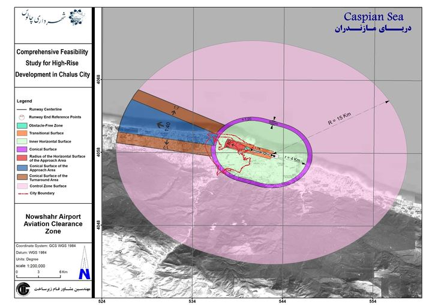
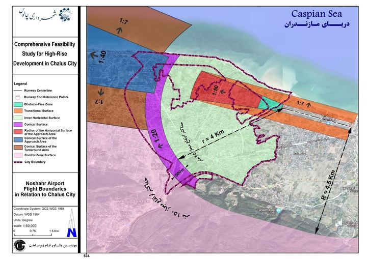
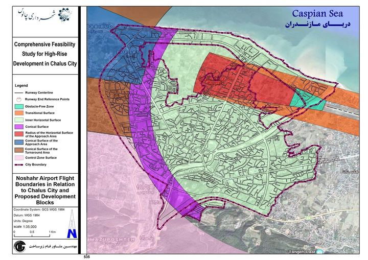
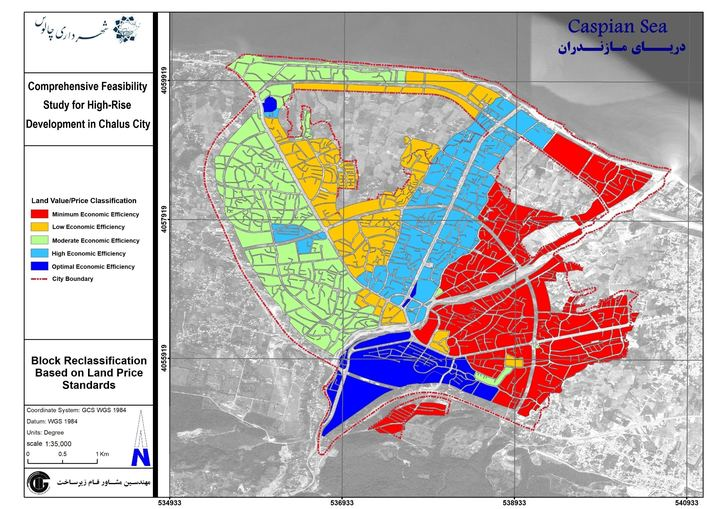
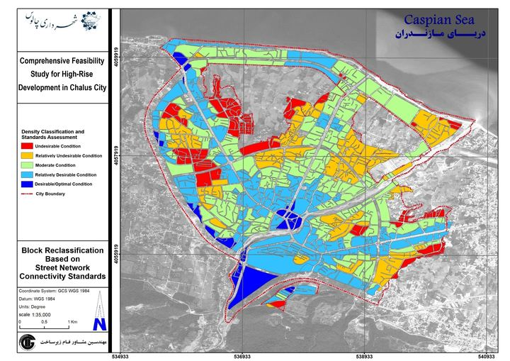
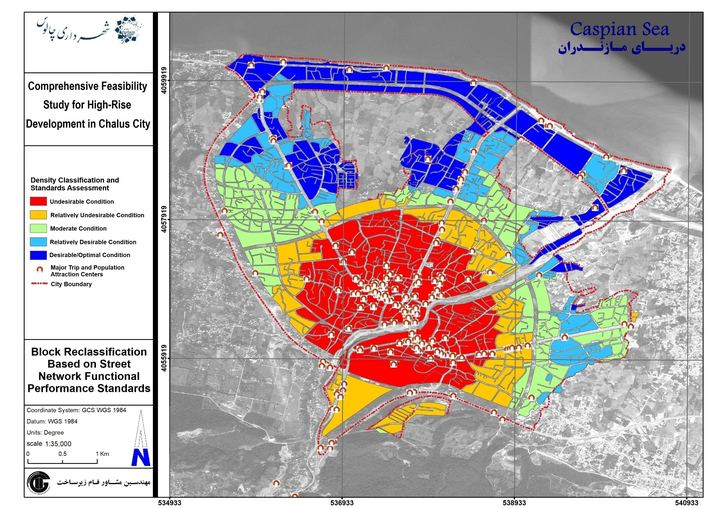
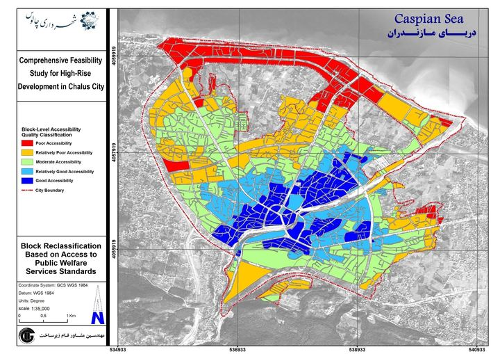
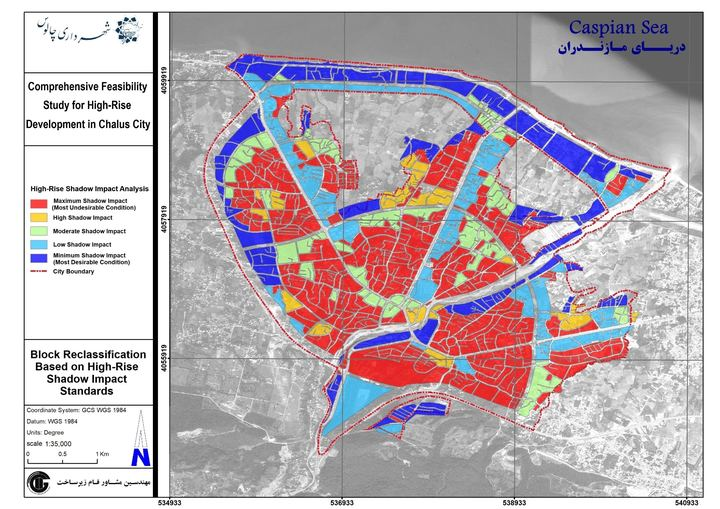
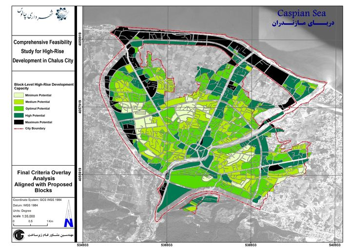

What Predicts Urban Traffic Congestion?
An interpretable machine-learning analysis of structural and behavioral correlates of congestion across census blocks in four major U.S. cities, with tract-grouped validation and cross-city transfer tests.
Computational Urban Scientist
I integrate geospatial machine learning, urban planning, network science, and multi-source spatial data to develop evidence-based tools for more equitable, accessible, resilient, and sustainable cities.
Profile
My work connects advanced spatial computation with planning practice, emphasizing interpretable methods, reproducible workflows, and equity-centered policy insights.
I am a computational urban researcher and PhD candidate in Geosciences at Texas Tech University. My research examines how urban form, infrastructure, environmental exposure, mobility, and social vulnerability interact across neighborhoods and metropolitan systems.
I have professional experience spanning municipal GIS, transportation planning, infrastructure management, urban policy, spatial databases, emergency response, and geospatial education. This combination allows me to translate analytical findings into practical planning and management tools.
My current work emphasizes geospatial machine learning, causal analysis, network modeling, environmental justice, land-use compatibility, transportation equity, and complex urban systems.
Selected Work
Selected themes drawn from my academic research, municipal practice, and geospatial application development.
An interpretable machine-learning analysis of structural and behavioral correlates of congestion across census blocks in four major U.S. cities, with tract-grouped validation and cross-city transfer tests.
Empirical and interpretable methods for evaluating neighborhood-scale land-use compatibility beyond traditional Euclidean zoning assumptions.
Spatial analysis of hurricane risk, social vulnerability, geographic exposure, environmental burden, and emergency relief disparities.
Accessibility analysis, response-time assessment, real-time dashboards, and mobile incident-management workflows supporting emergency operations and public safety.
Design and management of cadastral, transportation, fiber-optic, municipal asset, parking, permitting, and public-service geodatabases.
Web-based applications and spatial models using NDVI, NAIP imagery, nighttime lights, tourism-related emissions, green infrastructure, and climate-sensitive urban indicators.
Scholarship
Peer-reviewed journal articles, newest first, followed by manuscripts in review and preprints. Use the filters to focus the list.
Mansourihanis, O., & Wang, X. (2026). Cities, 179, 107734. DOI
Kookhaei, T., Darabi, H., Azadi, H., & Mansourihanis, O. (2026). Cities, 174, 106986. DOI
Mansourihanis, O., Soltani, A., & RoohaniQadikolaei, M. (2026). Scientific Reports, 16(1), 5746. DOI
Mansourihanis, O., Maghsoodi Tilaki, M. J., Tayarani, M., & Zaroujtaghi, A. (2026). International Journal of Transportation Science and Technology. DOI
Mansourihanis, O., Wang, X., Tayarani, M., Maghsoodi Tilaki, M. J., Gao, H. O., & Zaroujtaghi, A. (2025). Cities, 165, 106128. DOI
Zaroujtaghi, A., Mansourihanis, O., Tayarani, M., Mansouri, F., Hemmati, M., & Soltani, A. (2025). Future Transportation, 5(3), 97. DOI
Mansourihanis, O., Seyedebrahimi, E., Zaroujtaghi, A., & Zafari, T. (2025). Journal of Geovisualization and Spatial Analysis, 9, 39. DOI
Mansourihanis, O., Maghsoodi Tilaki, M. J., Armitage, R., & Zaroujtaghi, A. (2025). Remote Sensing Applications: Society and Environment, 38, 101583. DOI
Mansourihanis, O., Maghsoodi Tilaki, M. J., Kookhaei, T., Zaroujtaghi, A., Sheikhfarshi, S., & Abdoli, N. (2025). Management of Environmental Quality, 36(1), 107–129. DOI
Mansourihanis, O., Hemmati, M., Afshar, S. V., Eshaghi, S., & Varinlioğlu, G. (2025). Case Studies in the Environment, 9(1), 2439123. DOI
Zafari, Z., Golzary, A., Rouhi, K., & Mansourihanis, O. (2025). Journal of the Air & Waste Management Association, 75(5), 368–386. DOI
Mansourihanis, O., Maghsoodi Tilaki, M. J., Zaroujtaghi, A., Tayarani, M., & Sheikhfarshi, S. (2024). Journal of Place Management and Development, 17(4), 584–614. DOI
Soltani, A., Mansourihanis, O., RoohaniQadikolaei, M., & Zaroujtaghi, A. (2024). Applied Spatial Analysis and Policy, 17(3), 1301–1334. DOI
Mansourihanis, O., Maghsoodi Tilaki, M. J., Sheikhfarshi, S., Mohseni, F., & Seyedebrahimi, E. (2024). Societies, 14(8), 139. DOI
Mansourihanis, O., Zaroujtaghi, A., Hemmati, M., Maghsoodi Tilaki, M. J., & Alipour, M. (2024). Urban Science, 8(3), 82. DOI
Mansourihanis, O., Maghsoodi Tilaki, M. J., Yousefian, S., & Zaroujtaghi, A. (2023). Land, 12(11), 2083. DOI
Mansourihanis, O., & Wang, X. Dataset & code
Mansourihanis, O., & Wang, X. Travel Behaviour and Society. Preprint
Mansourihanis, O., & Wang, X. ESSOAr (2026). Preprint
Mansourihanis, O., & Wang, X. OSF (2026). Preprint
Open Science
Datasets and reproducibility packages published on Mendeley Data under a CC BY 4.0 license. Each link resolves to the latest version.
Congestion index and three-class Level of Service for the 2024 weekday morning peak across 131,507 census blocks in Chicago, Houston, Los Angeles, and New York City, with 46 predictors, per-city files, a data dictionary, a reproduction notebook, and checksums. Proprietary probe data are excluded.
Supports What predicts urban traffic congestion? (in revision)
Earlier analysis matrix for the same four-city congestion study: 134,530 census blocks with 46 upstream predictors in six categories and congestion outcomes, built from probe, Census/ACS, city open data, OpenStreetMap, EPA, and state DOT sources. Includes model analysis code.
Replication package for a block-level rent-burden analysis using 2020 ACS five-year estimates: 37,816 blocks with 394 cleaned attributes, Random Forest and XGBoost predictions, LISA clusters, K-means affordability typologies, model artifacts, and maps.
Graph-theoretic vulnerability analysis of the SORTA weekday bus network built from GTFS: 3,532 stops and 4,048 directed edges, PCA-based vulnerability scores from four centrality metrics, four disruption scenarios, Census equity overlays, shapefiles, and a Colab notebook.
Multi-layer network comparison of transport, points of interest, and green infrastructure: cleaned walk and drive networks, minimum spanning trees, Chinese Postman routes, POI layers, node tables, figures, and a reproducibility manifest.
Code and data for a directed Chinese Postman Problem with angle-dependent turn costs: a two-stage algorithm, integer-programming reference solvers, synthetic instance generators, baselines, and an OpenStreetMap pipeline. Results regenerate on a free CPU runtime in about 10–25 minutes.
Reproducibility package for a two-stage approximation algorithm: Python source, tests including more than 500 perturbation tests, synthetic instance generators, raw logs, an OpenStreetMap pipeline, and a single script that reproduces the results.
Professional Path
Research in nighttime lights, transportation safety, V2X and driving risk, building safety, electric-vehicle policy, web geovisualization, urban crime, water systems, and cyberinfrastructure.
Automated GIS workflows and supported traffic-monitoring placement, municipal bus routing, intersection redesign, and transportation data integration.
Led cadastral, land-use, infrastructure, accessibility, asset-management, smart-parking, fiber-network, permitting, and urban-planning GIS initiatives.
Delivered spatial planning, disaster-risk assessment, coastal-zone management, high-rise feasibility, waste-routing, utilities, telecommunications, and environmental-monitoring analyses.
Taught GIS, quantitative urban modeling, spatial planning, Python, geospatial big-data analysis, spatial statistics, GeoPandas, ArcGIS, QGIS, and geodatabase management.
Education
Texas Tech University · GPA 3.96
University of Tehran · GPA 3.70
University of Mazandaran · GPA 3.65
Research Communication
Bivariate mapping and temporal correlation for sustainable tourism policy.
GIS and AHP-based optimization of pedestrian routes in a historic urban core.
Spatial relationships among emergency response, crash severity, infrastructure, and urban safety.
3D Visualization
Animated 3D models that explain how my spatial analyses work. Each one was built by hand in GIS software, without AI-generated imagery, video, or narration.
A step-by-step 3D walkthrough of a cell-based model that scores how compatible every pair of land uses is, using neighborhood focal analysis in a GIS. I modeled, analyzed, and animated every scene myself in ArcGIS ArcScene in 2021. No AI tools were used at any stage.
Related publications: Land (2023) · Cities (2026)
An Obstruction Evaluation / Airport Airspace Analysis (OE/AAA) that models the protected airspace around Nowshahr Airport in 3D, to set height limits for tall buildings in neighboring Chalus and to account for flight paths. I modeled and animated every surface myself in ArcGIS ArcScene in 2021, and produced the maps below in GIS the same way. No AI tools were used.
Part of the Comprehensive Feasibility Study for High-Rise Development in Chalus City, a multi-criteria GIS study of 298+ urban blocks prepared for Chalus Municipality with Faam-Zirsakht Consulting Engineers.
The airspace limits were combined with land price, street network, service access, and shadow criteria to rate each block's capacity for high-rise development. Select a map to enlarge it.









A 3D simulation of vehicles moving through the street network of Sari, built from more than 44 million spatiotemporal records that were generated and processed for the model. Each vehicle is a 3D symbol moving along its route over time. I built and animated it myself in ArcGIS ArcScene in 2021. No AI tools were used.
In March 2020, Nowruz began just as COVID-19 was spreading in Iran, and many families kept the custom of visiting their parents. This household-level simulation of a city the size of Sari asks what happens if every family stays home except to visit its parents, and shows how far the virus travels through that one exception.
Even with every visit kept separate, a parents’ home picks up the virus from one family and passes it to the next. Because each family belongs to two such homes, these clusters chain together. In the original 2020 model, the virus reached every household in about three weeks. This illustrates a mechanism. It is not a forecast and is not calibrated to reported cases.
Run the interactive simulation yourself → Play it day by day, zoom into a neighbourhood, and test what happens when some families skip the visit.
A parametric GIS model that finds the most comfortable walking routes, not just the shortest, with priority for elderly and disabled pedestrians. It was tested on a hypothetical city of ten zones (A–J) and transfers to any city with the input data.
Capabilities
ArcGIS Pro, ArcGIS Online, Enterprise, Dashboards, Experience Builder, StoryMaps, QGIS, Google Earth Engine
Python, GeoPandas, Pandas, NumPy, scikit-learn, TensorFlow, Jupyter, SQL, R, JavaScript
PostGIS, PostgreSQL, geodatabase design, spatial queries, data integration, quality assurance
Spatial statistics, ensemble learning, causal analysis, network analysis, optimization, time-series analysis
Matplotlib, Plotly, Tableau, Power BI, ArcScene, 3D geovisualization, web mapping
Urban planning, environmental equity, accessibility, participatory GIS, Delphi methods, policy analysis
View the full record of publications, research, professional experience, projects, teaching, and service.
Connect
I welcome research collaboration and professional conversations involving geospatial machine learning, urban systems, transportation, environmental justice, spatial databases, and sustainable development.
Email: omansour@ttu.edu
Affiliation: Texas Tech University
Location: Fairfax, Virginia, United States